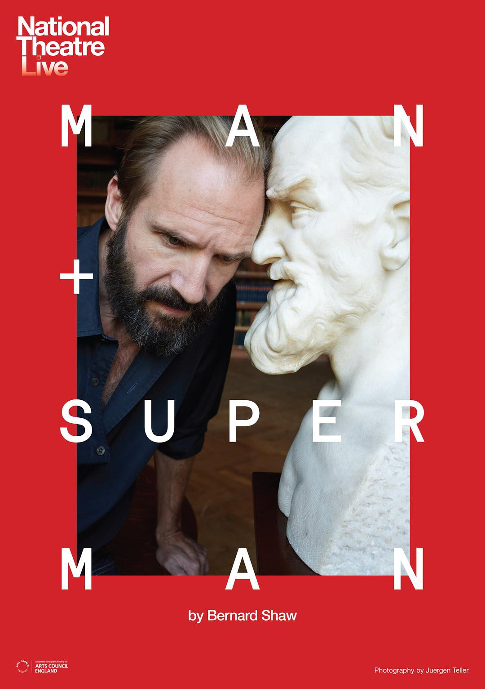
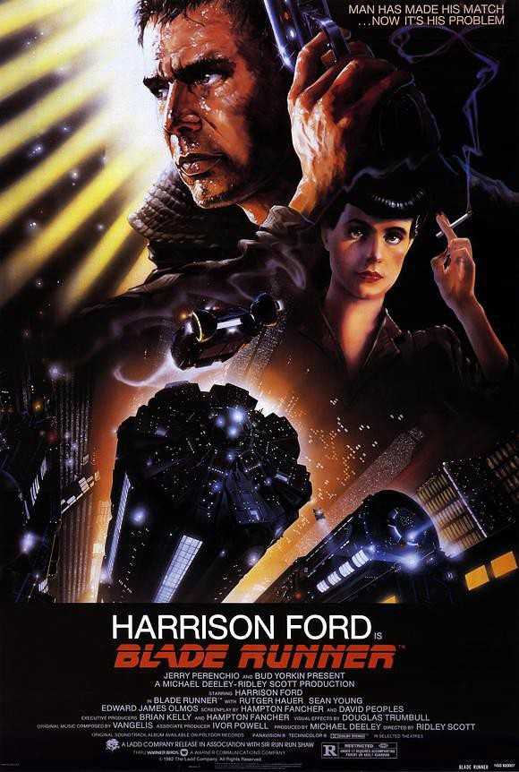
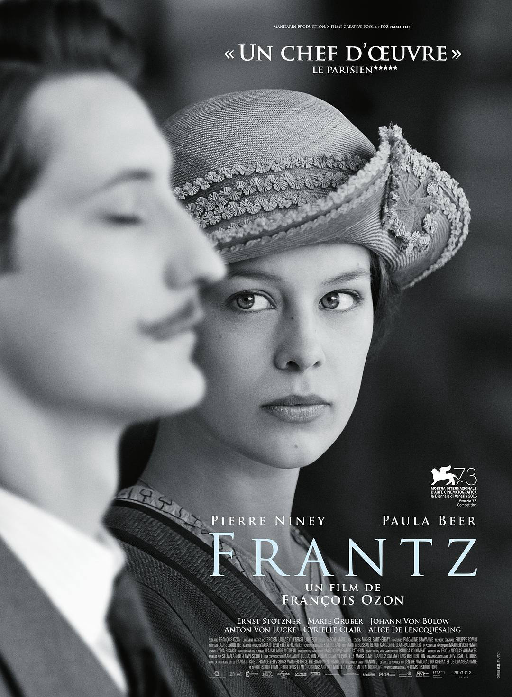
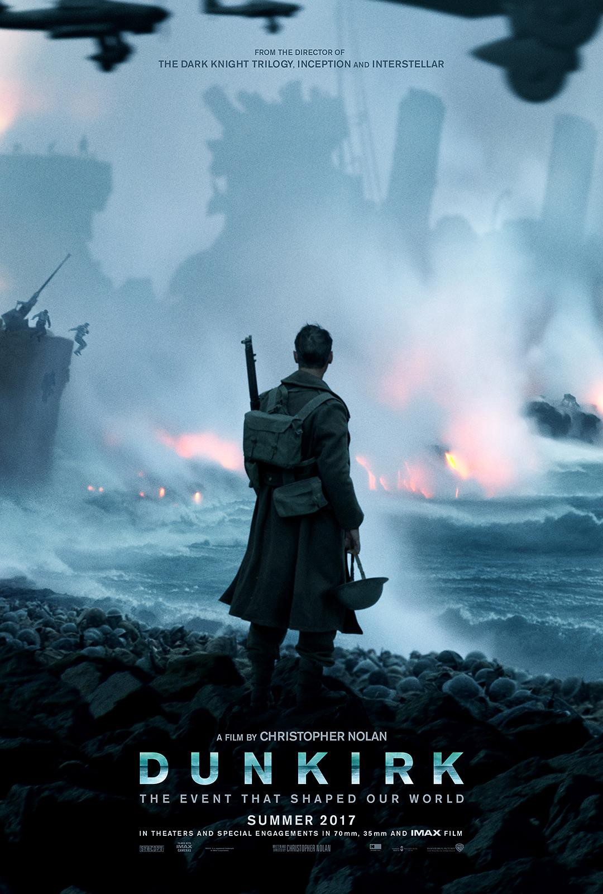
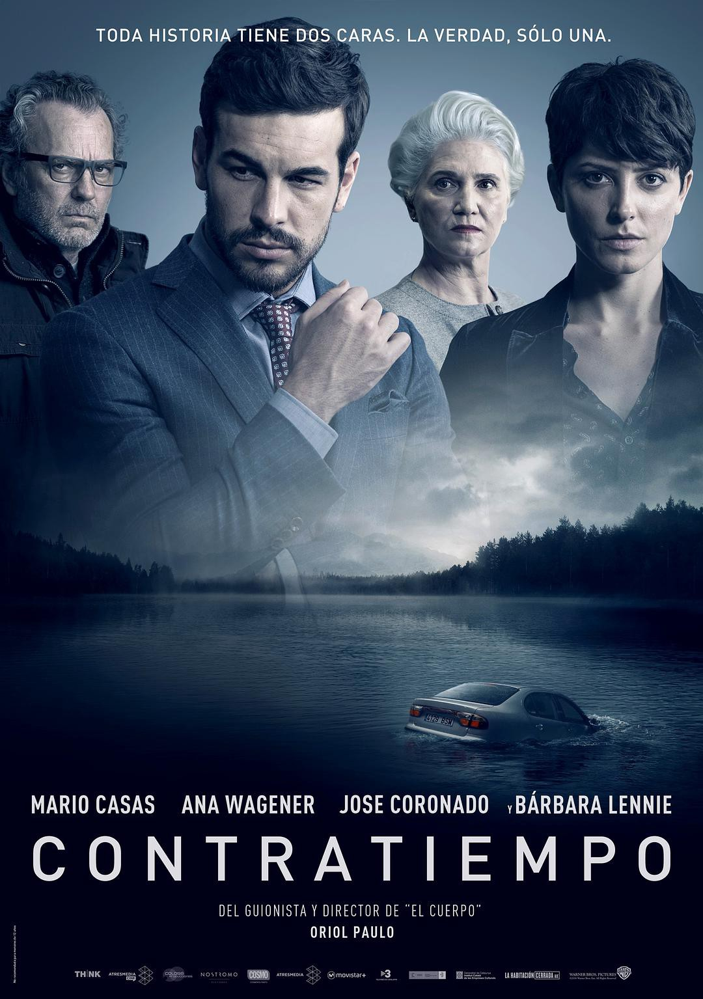
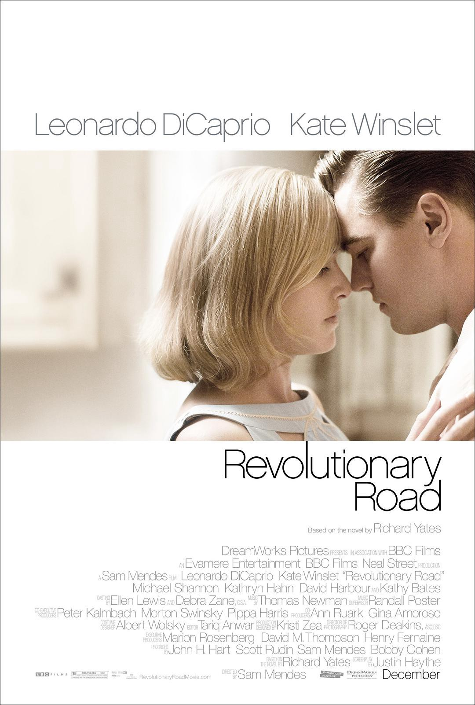
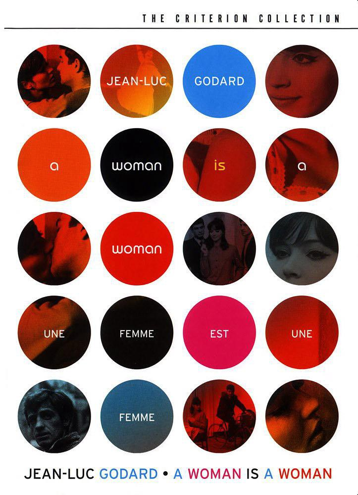
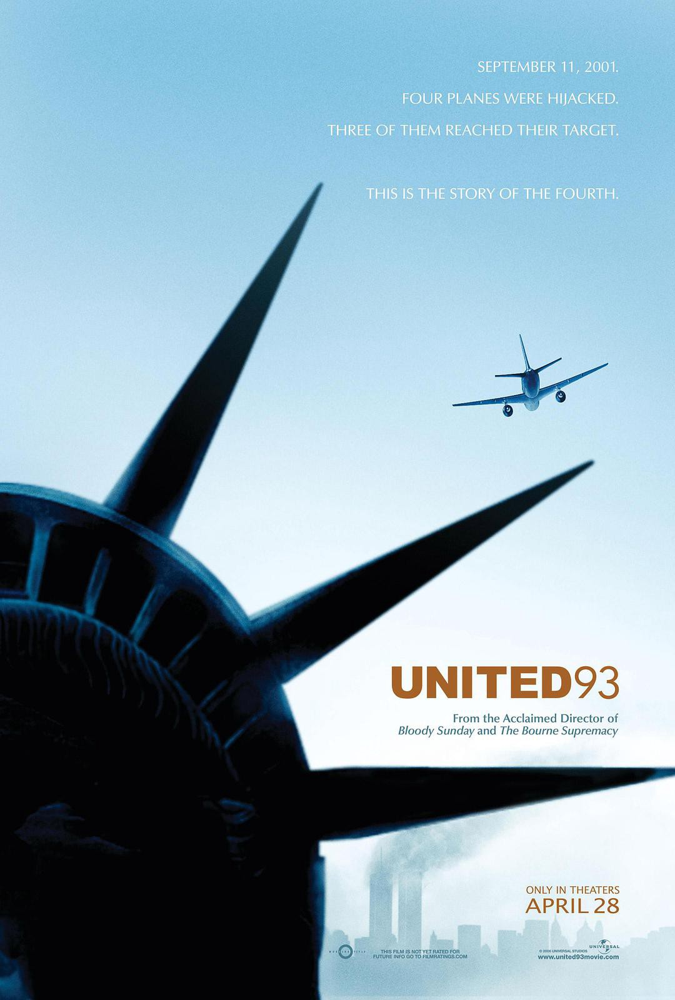
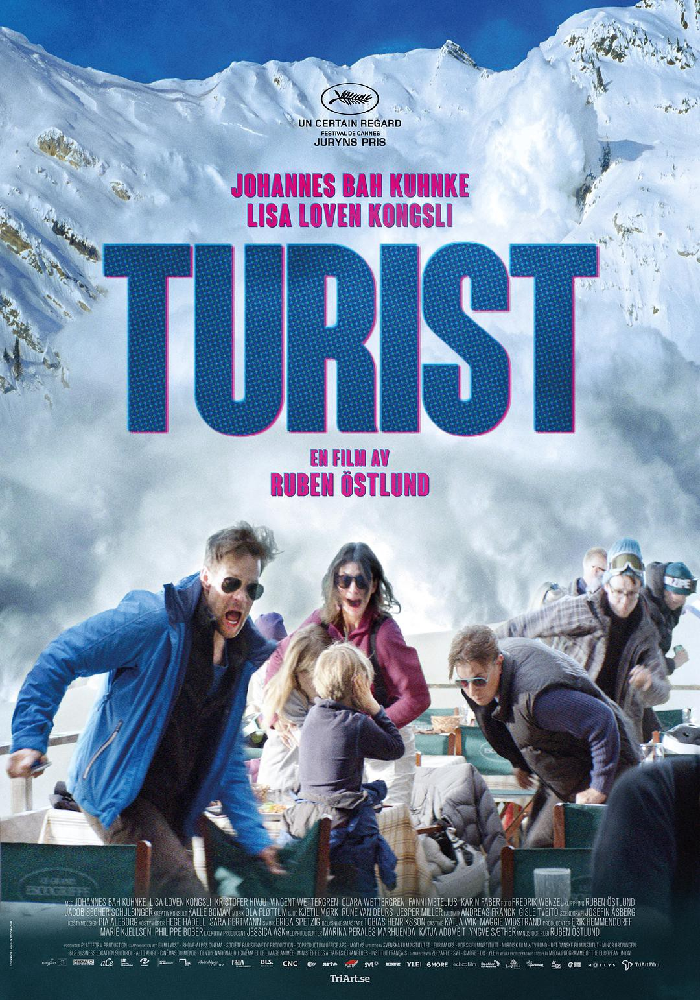
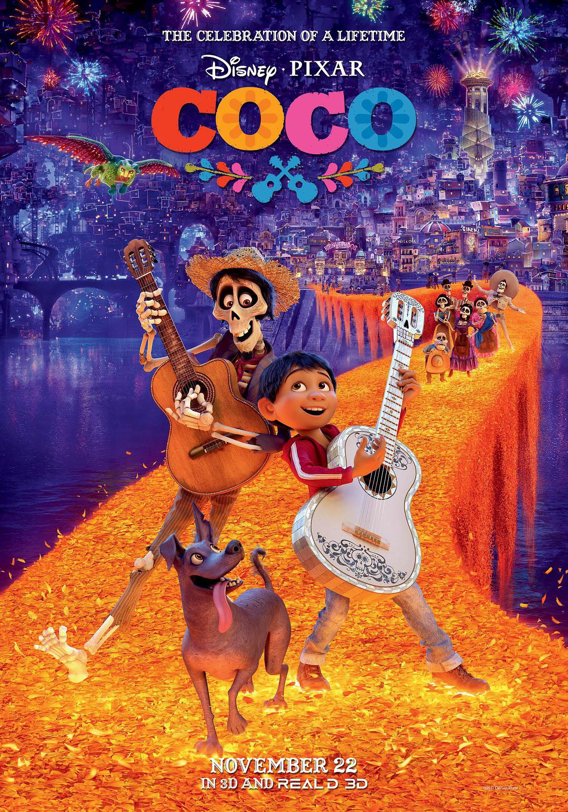

2017在电影方面是大型怀旧冷饭年，各种二十年三十年的冷饭被拿出来热炒，有5年冷饭《异形：契约》，7年冷饭《电锯惊魂8》，20年冷饭《猜火车2》，27年冷饭《IT》，35年冷饭《银翼杀手2049》，43年冷饭《东方快车谋杀案》和《星球大战8》，当然它们之中有些质量还不错，但是过度怀旧确实是今年的一大主题。2017年看了133部电影，从中选出10部最喜欢的，算作推荐。
1. 凡人与超人 National Theatre Live: Man and Superman (2015)

准确的说这部并不算电影，而是戏剧，不过确实是在电影院看的，所以姑且算作电影了。
National Theatre Live是英国国家剧院搞得一个戏剧放映项目，给没有机会到英国国家剧院现场的人一个感受戏剧魅力的平台，但是在国内只有指定的少数电影院有播放权，不发行DVD和蓝光，所有网上很难有资源。
这部《凡人与超人》是萧伯纳的戏剧，超大的台词密度，对生活精妙的讽刺以及拉尔夫·费因斯精彩的演技让4个小时的戏剧一晃而过，算是第一次感受英国戏剧的魅力。其中最吸引我同时也是观众笑声最密集的是第一幕，萧伯纳对男女关系和婚姻的讽刺嘲弄让人拍案叫绝，简直是洞穿了生活真相的哲学家和两性学家。
2. 银翼杀手 Blade Runner (1982)

第一次看《银翼杀手》是在高中，缓慢的剧情和一直在下雨的阴郁让我昏然入睡。在今年《银翼杀手2049》上映之前，又拿出来看了一遍，才体会到它的好，这不是科幻片，这是科幻文艺片！
感受下最有名的Batty雨中独白
I’ve seen things you people wouldn’t believe.
Attack ships on fire off the shoulder of Orion.
I’ve watched c-beams glitter in the dark near the Tannhauser Gate.
All those … moments will be lost in time, like tears…in rain.
我所见过的事物，你们人类绝对无法置信。
我目睹了战船在猎户星座的端沿起火燃烧
我看着C射线 在唐怀瑟之门附近的黑暗中闪烁
所有这些时刻 终将流逝在时光中
一如眼泪
消失在雨中
3.弗兰兹 Frantz (2016)

今年看完了法国导演弗朗索瓦·欧容的所有电影包括短片，对这部《弗兰兹》爱不释手。弗朗索瓦·欧容拍了太多的同性之爱，太多美艳的肉体，反而让这部黑白的《弗兰兹》显得很特别，也很容易让本不了解弗朗索瓦·欧容的轻口味观众入门，不会上来就被《双面情人》这样的片子吓跑。影片气质上的美总会让我想到韦斯安德森，弗朗索瓦欧容对镜子的痴迷一如韦斯安德森对对称构图的执着，8段画面由黑白到彩色的变化描述了一段完美镜像的爱情。
4. 敦刻尔克 Dunkirk (2017)

这可能是和以往诺兰风格区别最大的一部电影，虽然保留了多线叙事和没有重要女性角色的传统，但这部电影是用来感受的，而不是用来理解的。多线叙事并不构成智力挑战和解密快感，更多的是通过IMAX、配乐和剪辑营造一种沉浸式的紧迫感和绝望。
可以配合《至暗时刻》一同食用，一个台前，一个幕后。
5.看不见的客人 Contratiempo (2016)

很久没看到完成度这么高的悬疑片了，剥洋葱一般一层又一层的剧情反转，罗生门式的骗了又骗，逻辑非常严密，没有什么严重的漏洞，除了有一个细节无法自圆其说：假古德曼律师在和菲利克斯通话时，没有因为声音不同被认出来，虽然有机场嘈杂的声音作为掩盖。另外提一句，看悬疑片不是你和导演的智力竞赛，是否猜出结局/凶手不是评价悬疑片好坏的主要标准，喜欢证明自己聪明的人通常都很蠢，猜的选项就那么几个，猜对很有成就感吗？
6.革命之路 Revolutionary Road (2008)

这部电影最大的亮点大概是男主角是莱昂纳多·迪卡普里奥，女主角是凯特·温丝莱特，因而可以把它看成是假如Jack在《泰坦尼克号》中得救了，他们的婚姻生活是什么样的。伟大的爱情故事总是有巨大的障碍，当障碍消除之后，这部电影展示了平静幸福的婚姻生活是怎么被打破的。光鲜亮丽的生活背后总是千疮百孔的，看似幸福美满的婚姻生活的内核是一场大型灵魂崩溃。
7. 女人就是女人 Une femme est une femme (1961)

法国新浪潮电影中有太多新奇有意思的手法，而戈达尔又是整个新浪潮运动的旗手，开创了跳切等一系列创新，这部电影中有意思的小细节也是层出不穷：把煎蛋抛起来接个电话再接到从空中落下的煎蛋，用书名进行对话，用锤子打开淋浴等等。法国人对三人行还真是有种独特的执着，从戈达尔自己的《法外之徒》，到特吕弗的《祖与占》再到这部，两男一女的爱情故事法国人总也拍不完。
8. 93航班 United 93 (2006)

目前看过的最有让人泪目感觉的电影了，再现了911事件中被劫持的第四架飞机从登机到被劫持再到坠毁的全过程，真实程度令人发指，每一个坐过美国客机的人都能感同身受到那种恐惧和绝望，最后和亲友打电话告别的场面实在让人动容
9.游客 Turist (2014)

一次旅行中的意外引发的婚姻崩溃，一场大型灵魂拷问。其实很多时候，人的反应都是下意识做出的，后面的解释全是为了让自己的行为看起来更合理，正如诺兰的《失眠症》中所体现的，有时一念之间发生的事根本说不清楚当时到底是有意还是无意。同样的意外可能发生在任何一对夫妻之间，很难不让人设想，如果发生了同样的意外，「我」的第一反应会是什么？会面对怎么样的拷问？
10.寻梦环游记 Coco (2017)

一开始拉我看动画电影我是拒绝的，毕竟我有「动画电影不是电影」的偏见。但这部真的很棒，主要是其对待死亡的价值观，让我想起了死亡的三个阶段：生物体征的死亡，肉体的毁灭，以及精神的消亡：所有记得你的人都已经死去。或许，当有人记得你，牵挂你的时候，你就还以某种方式活着